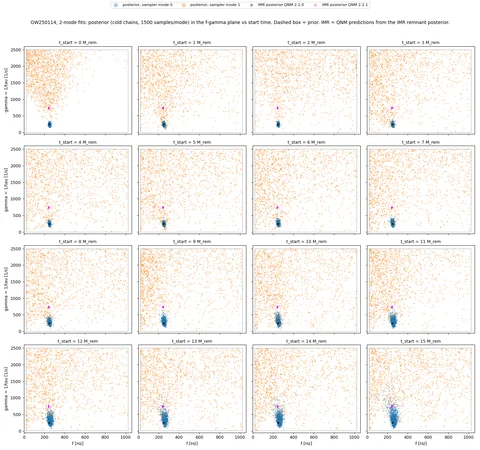
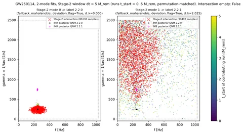
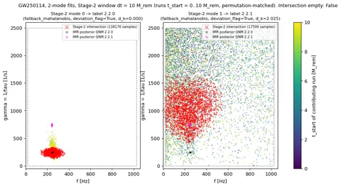
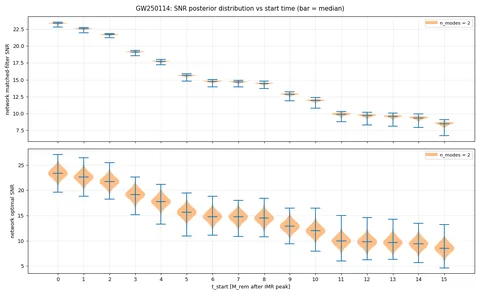
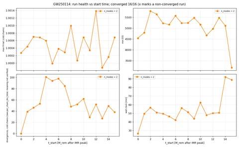

GW250114: 2-mode fits, 16 start times
All 2-mode fits across start times 0..15 M_rem after the IMR peak. Posteriors are the cold chains only. gamma = 1/tau in 1/s; f in Hz.
Stage 2 intersects the permutation-matched posteriors of the runs in a start-time window of width dt = 5 or 10 M_rem from t_start = 0. Stage 3 assigns QNM labels to the intersection modes. Divergence counts are the raw sampler counter; its exact meaning is not verified.
Settings
| n_modes | 2 |
|---|---|
| start times [M_rem] | 0, 1, ..., 15 |
| Stage-2 windows dt [M_rem] | 5, 10 |
Summary figures (5)
{kind=link}

{kind=link}

{kind=link}

{kind=link}

{kind=link}

Stage-3 mode assignment
Every assignment uses fallback_mahalanobis with deviation_flag = true: the conformal prediction point carries no amplitude or phase on real data. Labels come from the ranking d_k = sqrt((f_k/f_220 - 1)^2 + (gamma_k/gamma_220 - 1)^2) of the IMR-predicted QNMs.
| dt [M_rem] | window | Stage-2 mode index | QNM label (l.m.n) | d_k | method | deviation_flag |
|---|---|---|---|---|---|---|
| 5 | t0..t5 M_rem (6 runs) | 0 | 2.2.0 | 0 | fallback_mahalanobis | true |
| 5 | t0..t5 M_rem (6 runs) | 1 | 2.2.1 | 2.03 | fallback_mahalanobis | true |
| 10 | t0..t10 M_rem (11 runs) | 0 | 2.2.0 | 0 | fallback_mahalanobis | true |
| 10 | t0..t10 M_rem (11 runs) | 1 | 2.2.1 | 2.03 | fallback_mahalanobis | true |
IMR-predicted QNMs used for the ranking
| QNM label | f [Hz] | gamma = 1/tau [1/s] | d_k |
|---|---|---|---|
| 2.2.0 | 248.35 | 245.16 | 0 |
| 2.2.1 | 242.49 | 741.6 | 2.03 |
Runs (16)
| run | status | n_modes | t_start [M_rem] | f_0 [Hz] | gamma_0 [1/s] | f_1 [Hz] | gamma_1 [1/s] | network matched-filter SNR | max R-hat | min ESS | divergences, cold chains (raw) |
|---|---|---|---|---|---|---|---|---|---|---|---|
| t0Mf | converged | 2 | 0 | 250.3 (+8.304 / -7.87) | 222.1 (+55.2 / -39.99) | 216 (+262.6 / -179.6) | 1801 (+635.2 / -982.8) | 23.4 (+0.1 / -0.167) | 1 | 4541 | 0 |
| t1Mf | converged | 2 | 1 | 249.4 (+8.754 / -7.782) | 222.3 (+53.05 / -38.36) | 273.9 (+563.1 / -228.1) | 1625 (+789.6 / -1181) | 22.6 (+0.105 / -0.163) | 1 | 4793 | 39 |
| t2Mf | converged | 2 | 2 | 250.3 (+8.12 / -7.83) | 224.2 (+53.18 / -38.42) | 392.5 (+567 / -330.5) | 1792 (+646.5 / -1255) | 21.7 (+0.113 / -0.17) | 1.001 | 5787 | 46 |
| t3Mf | converged | 2 | 3 | 251.4 (+8.064 / -8.662) | 225 (+67.06 / -44.01) | 232.1 (+676.3 / -197) | 1644 (+772.4 / -1265) | 19.1 (+0.109 / -0.183) | 1.001 | 5641 | 53 |
| t4Mf | converged | 2 | 4 | 250.5 (+8.432 / -8.297) | 230.9 (+59.94 / -44.87) | 345 (+600.7 / -301.6) | 1635 (+784.6 / -1265) | 17.7 (+0.0983 / -0.195) | 1.001 | 5229 | 101 |
| t5Mf | converged | 2 | 5 | 250.8 (+8.889 / -9.237) | 237.1 (+68.94 / -50.26) | 292.3 (+646.9 / -251.3) | 1573 (+839.7 / -1235) | 15.6 (+0.108 / -0.219) | 1 | 5167 | 94 |
| t6Mf | converged | 2 | 6 | 251 (+10.18 / -10.31) | 242.3 (+80.67 / -53.89) | 283.7 (+650.9 / -243.9) | 1605 (+811.5 / -1262) | 14.8 (+0.119 / -0.235) | 1 | 5570 | 98 |
| t7Mf | converged | 2 | 7 | 252.2 (+10.16 / -12.57) | 249.3 (+90.96 / -58.59) | 272.6 (+678.9 / -237.7) | 1595 (+814.6 / -1252) | 14.7 (+0.112 / -0.232) | 1 | 5234 | 85 |
| t8Mf | converged | 2 | 8 | 251.8 (+12.36 / -14.35) | 253.6 (+116 / -63.74) | 275.3 (+665.3 / -235.2) | 1500 (+902 / -1127) | 14.4 (+0.125 / -0.247) | 1.001 | 5242 | 48 |
| t9Mf | converged | 2 | 9 | 252.9 (+13.44 / -16.36) | 265.6 (+147.6 / -81.94) | 209.3 (+717.6 / -179.5) | 1632 (+791.7 / -1240) | 12.8 (+0.178 / -0.291) | 1 | 5476 | 52 |
| t10Mf | converged | 2 | 10 | 252 (+15.61 / -16.81) | 276.5 (+142.8 / -89.64) | 267.7 (+650.4 / -227.9) | 1513 (+885.6 / -1169) | 11.9 (+0.154 / -0.293) | 1.001 | 5166 | 62 |
| t11Mf | converged | 2 | 11 | 255.9 (+19.49 / -19.51) | 286.3 (+173 / -105.2) | 210.6 (+622.9 / -176.4) | 1580 (+833.7 / -1188) | 9.89 (+0.219 / -0.369) | 1 | 4666 | 29 |
| t12Mf | converged | 2 | 12 | 256.6 (+20.94 / -19.68) | 302.3 (+181.8 / -111.9) | 290.3 (+614.4 / -249.9) | 1613 (+794.6 / -1203) | 9.71 (+0.206 / -0.391) | 1.001 | 4967 | 52 |
| t13Mf | converged | 2 | 13 | 258.5 (+21.85 / -22.99) | 315.7 (+238.5 / -120.6) | 307.4 (+619.4 / -267.6) | 1629 (+787 / -1211) | 9.56 (+0.199 / -0.403) | 0.9999 | 5481 | 27 |
| t14Mf | converged | 2 | 14 | 260.8 (+23.63 / -28.2) | 324.5 (+293 / -141.5) | 282 (+647.1 / -246.2) | 1619 (+798.4 / -1254) | 9.35 (+0.212 / -0.437) | 1 | 5112 | 49 |
| t15Mf | converged | 2 | 15 | 262.2 (+26.91 / -40.28) | 324.9 (+463.1 / -150.8) | 348 (+582.6 / -309.9) | 1654 (+773 / -1203) | 8.48 (+0.253 / -0.546) | 1.001 | 3178 | 38 |